Battery Energy Storage Systems (BESS) have emerged as critical infrastructure for commercial and industrial facilities seeking to optimize energy costs, enhance grid reliability, and support renewable energy integration. However, the key to maximizing performance and return on investment (ROI) lies in proper system sizing — a complex process that requires careful consideration of multiple technical, operational, and financial factors.
Understanding BESS Sizing Fundamentals
Sizing a commercial and industrial BESS involves determining the optimal energy capacity (MWh) and power rating (MW) to meet specific application requirements. The energy capacity determines how much electricity can be stored and delivered over time, while the power rating dictates the maximum rate at which energy can be charged or discharged at any given moment.
The energy-to-power ratio (E/P) serves as a crucial indicator of how long the system can operate while delivering its rated output. For example, a 2 MW/4 MWh BESS can continuously deliver 2 MW for 2 hours, while a 1 MW/4 MWh system can deliver 1 MW for 4 hours with the same energy storage capacity.
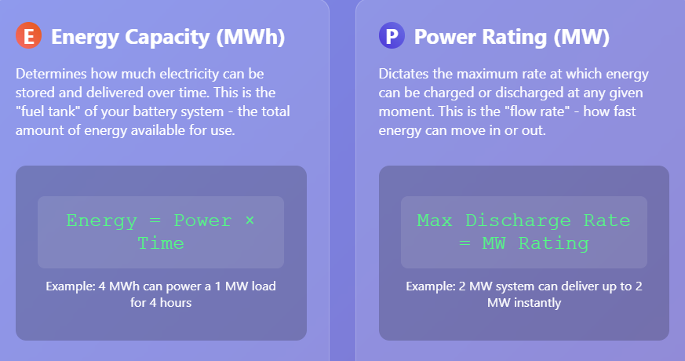
Key Factors Impacting BESS Sizing
Energy Demand Analysis and Load Profiling
The foundation of proper BESS sizing begins with comprehensive energy demand analysis. This involves:
- Daily Energy Consumption Patterns: Understanding your facility's hourly, daily, and seasonal energy usage patterns through at least 12 months of historical electricity bill data. Peak usage times, baseline loads, and energy consumption variations directly influence sizing requirements.
- Critical Load Identification: Determining which systems and equipment must remain operational during outages helps establish minimum capacity requirements. Essential loads such as refrigeration, medical equipment, and critical manufacturing processes define the baseline energy storage needs.
- Load Growth Projections: Planning for future expansion and increased energy consumption ensures the system remains viable over its operational lifetime. A compound annual growth rate (CAGR) analysis helps determine whether additional capacity will be needed as operations scale.
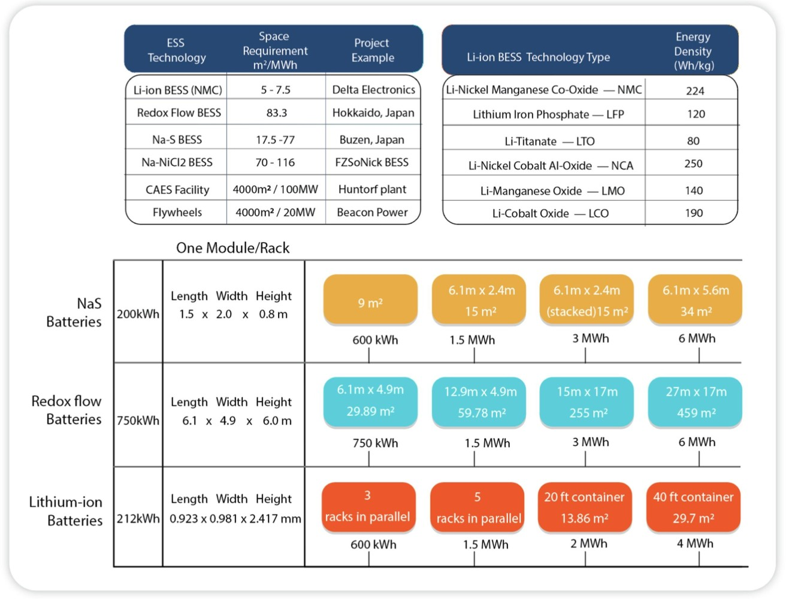
Application-Specific Requirements
Different applications drive distinct sizing requirements:
- Peak Shaving and Demand Charge Reduction: Systems designed for peak shaving require sufficient capacity to discharge during high-demand periods, typically requiring 1-4 hours of duration. The sizing calculation involves analyzing the difference between maximum load limits and actual consumption patterns.
- Energy Arbitrage and Time-of-Use Optimization: Applications focused on buying electricity during off-peak hours and using it during peak pricing periods require larger energy capacity but may have lower power rating requirements.
- Backup Power and Resilience: Critical backup applications require sizing based on essential load requirements and desired backup duration, often ranging from several hours to multiple days.
- Renewable Energy Integration: BESS paired with solar or wind installations must accommodate fluctuations in renewable generation while maximizing self-consumption.
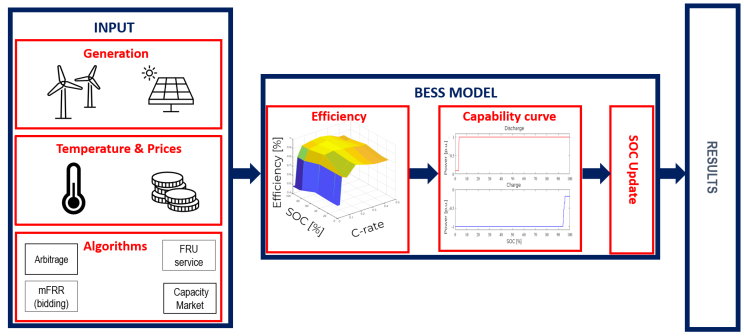
Technical Performance Parameters
Battery Technology and Chemistry
The choice of battery chemistry significantly impacts sizing decisions:
- Lithium Iron Phosphate (LFP) batteries typically offer 80-90% depth of discharge (DoD), allowing more usable energy from the installed capacity. For commercial applications, LFP systems typically provide 60kWh to 400kWh capacity with power conversion systems ranging from 50kW to 360kW.
- Round-Trip Efficiency: Modern lithium-ion systems achieve 85-95% efficiency, meaning 5-15% of stored energy is lost during the charge-discharge cycle. This efficiency factor must be incorporated into sizing calculations to ensure adequate energy delivery.
- Cycle Life and Degradation: Battery degradation over time affects long-term performance and must be factored into initial sizing. Systems should account for capacity fade to maintain performance specifications throughout the operational lifetime.
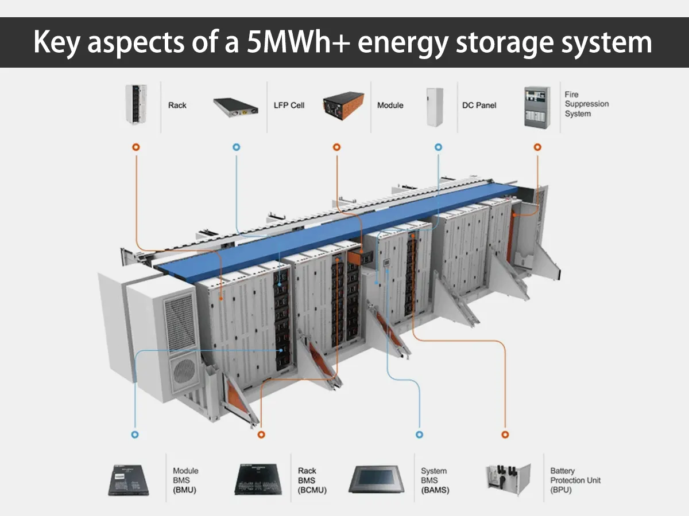
Thermal Management Requirements
Proper thermal management is crucial for maintaining battery performance and safety. The cooling system sizing depends on:
- Heat Generation Calculations: The total thermal load includes heat from battery charge/discharge cycles, environmental heat transfer, solar radiation, and auxiliary equipment. For a 5MWh container system, cooling units typically range from 45kW to 60kW depending on battery internal resistance and environmental conditions.
- Environmental Conditions: Ambient temperature variations affect cooling requirements and system efficiency. Systems must be designed to operate effectively in temperature ranges from -25°C to +50°C.
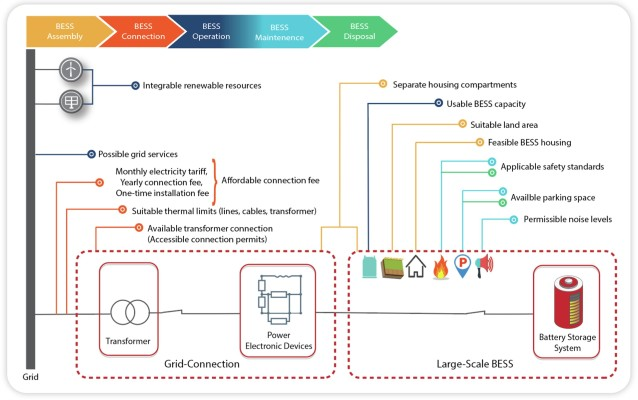
Site and Installation Factors
Physical Space and Layout
Commercial and industrial BESS installations require significant physical space. Key considerations include:
- Footprint Requirements: A 1MW BESS typically requires approximately 50m² of physical space, with additional area needed for access roads, electrical infrastructure, and safety setbacks.
- Grid Connection Distance: Systems should ideally be located within 100 meters of the electrical connection point to minimize construction costs and voltage drops.
- Fire Safety and Code Compliance: Fire code requirements significantly impact site layout, requiring adequate spacing between battery units, fire suppression systems, and emergency access routes. Many jurisdictions require internal fire suppression systems and defensible perimeters around installations.
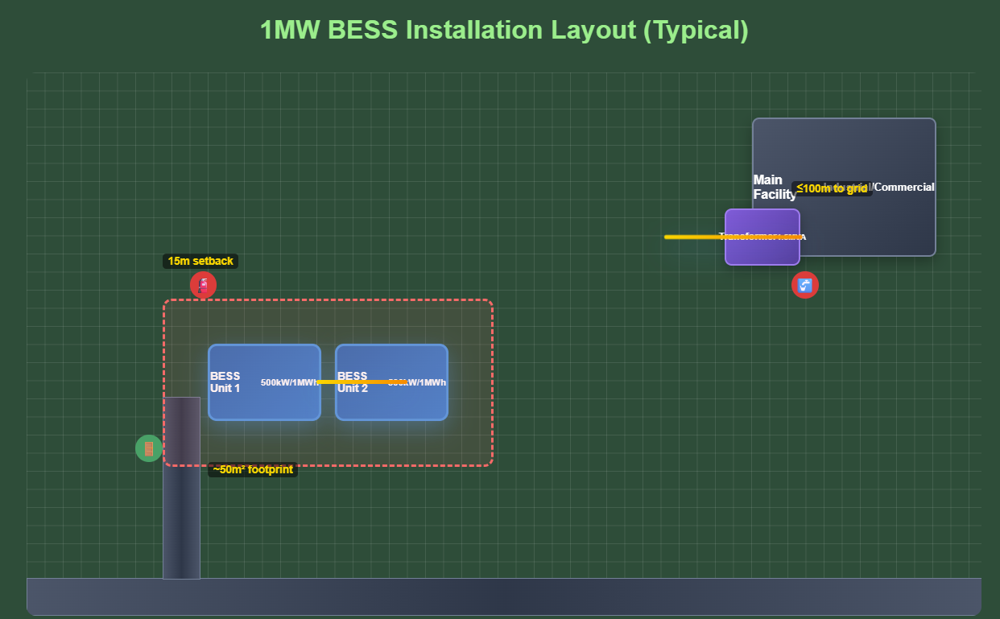
Environmental and Safety Considerations
- Ventilation and Cooling Infrastructure: Proper airflow and thermal management systems are essential for safe operation. Industrial-grade HVAC systems must maintain optimal temperature ranges (15-30°C) and provide adequate ventilation.
- Safety Systems Integration: Comprehensive safety systems including fire detection, gas monitoring, thermal management, and emergency shutdown capabilities must be integrated into the system design.
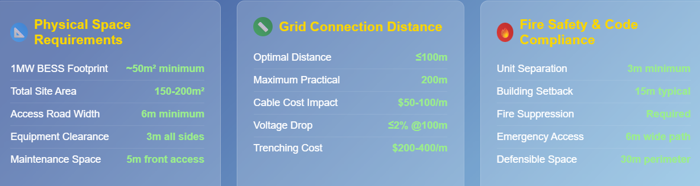
Economic Analysis and ROI Optimization
Financial Modeling Approaches
Proper financial analysis requires comprehensive lifecycle cost modeling. Key economic factors include:
- Capital Expenditure (CAPEX): Industrial-scale BESS installations typically range from $450-600 per kWh of capacity. This includes battery modules, power conversion systems, installation, and associated infrastructure.
- Operating Expenses (OPEX): Ongoing costs include maintenance, monitoring, insurance, and eventual battery replacement. Advanced battery management systems help minimize maintenance costs and extend operational life.
- Revenue Streams and Value Stacking: Modern BESS installations can generate revenue through multiple value streams including peak shaving, demand charge reduction, energy arbitrage, grid services participation, and backup power provision.
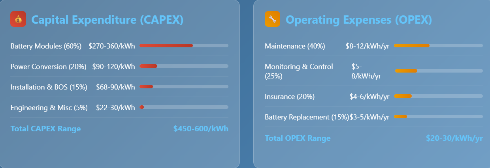
Payback Period and ROI Calculations
- Simple Payback Analysis: For owner-operated systems, payback periods typically range from 5-10 years depending on electricity rates, demand charges, and available incentives. The formula is:Payback Period = Total System Cost / Average Annual Savings.
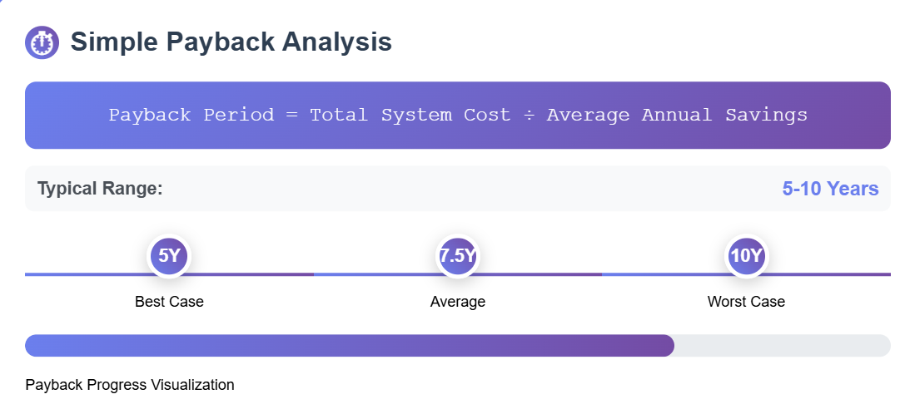
- Net Present Value (NPV) Analysis: Comprehensive NPV calculations must account for battery degradation, inflation, energy price escalation, and financing costs. Advanced financial models incorporate storage discount rates that reflect the combined impact of degradation, efficiency losses, and financing terms.
- Investment Tax Credits and Incentives: Federal and state incentives can significantly improve project economics, with Investment Tax Credits (ITC) and Modified Accelerated Cost Recovery System (MACRS) depreciation providing substantial financial benefits.
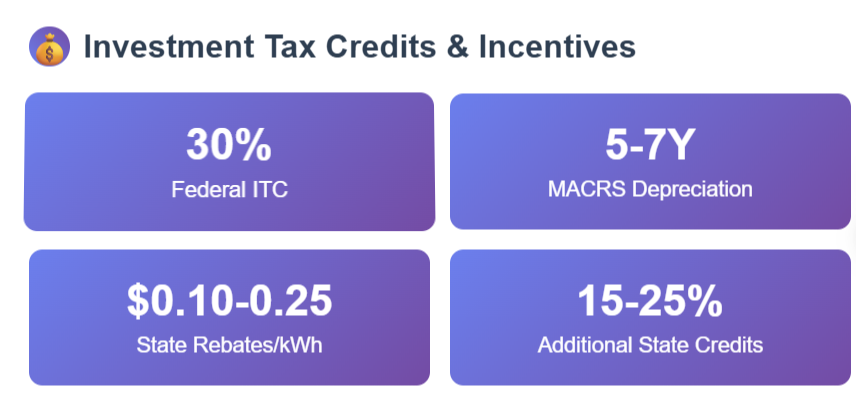
Risk Assessment and Mitigation
- Performance Guarantees: Many installations utilize tolling agreements or revenue floor arrangements to mitigate market risk and secure financing. These structures provide guaranteed minimum revenues while sharing upside potential.
- Degradation and Technology Risk: Proper sizing must account for capacity fade over the system lifetime, typically 2-3% annually for lithium-ion systems. Advanced battery technologies with lower degradation rates can provide superior long-term economics despite higher initial costs.
Sizing Methodologies and Best Practices
Preliminary Sizing Approach
The initial sizing process typically follows a systematic approach:
- Energy Balance Analysis: Calculate total energy contained in peak demand instances throughout the year to estimate rough capacity requirements.
- Peak Load Assessment: Identify maximum power requirements during critical periods to determine power rating needs.
- Duration Analysis: Evaluate how long the system needs to operate at peak output to establish the optimal energy-to-power ratio.
Detailed Optimization
Advanced sizing methodologies employ iterative optimization processes:
- Capacity Adjustment: Systems are refined through iterative analysis until unmet energy demand reaches acceptable predefined levels. This process balances capital costs against performance requirements.
- Component Integration: Power conversion system sizing must align with battery capacity and application requirements, considering conversion efficiency, reactive power capability, and grid.
- Future-Proofing: Modular system designs allow for capacity expansion as energy needs grow or market conditions change. This scalability ensures long-term value preservation.
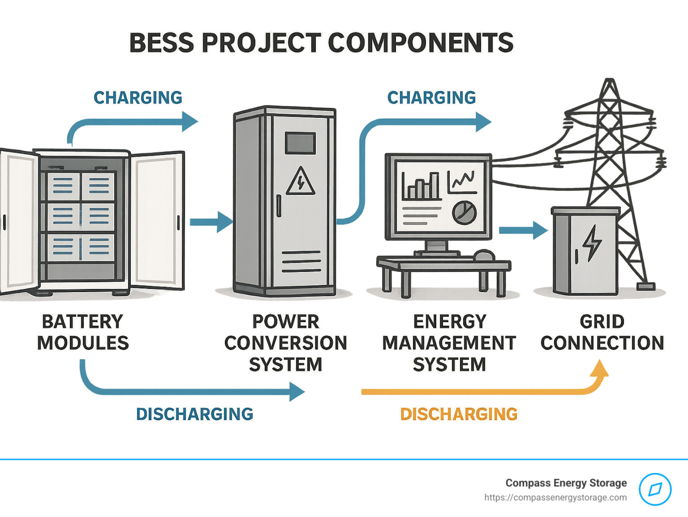
Emerging Considerations and Future Trends
- Advanced Control Systems: Modern BESS installations incorporate sophisticated energy management systems (EMS) that optimize charging and discharging based on real-time grid conditions, electricity prices, and facility demand patterns. These systems enable dynamic operation that maximizes economic benefits while maintaining grid stability.
- Grid Services and Ancillary Markets: Commercial and industrial BESS can participate in grid services markets, providing frequency regulation, capacity markets, and demand response services. These additional revenue streams are becoming increasingly important for project economics and must be considered during sizing.
- Regulatory Evolution: Fire safety codes and installation standards continue to evolve, with organizations like NFPA updating requirements for energy storage systems. Staying current with regulatory developments ensures compliance and optimal system design.
Conclusion
Properly sizing a commercial and industrial BESS requires a comprehensive understanding of energy demand patterns, application requirements, technical performance parameters, site constraints, and economic objectives. Success depends on balancing initial capital investment against long-term operational benefits while ensuring safety, reliability, and regulatory compliance.